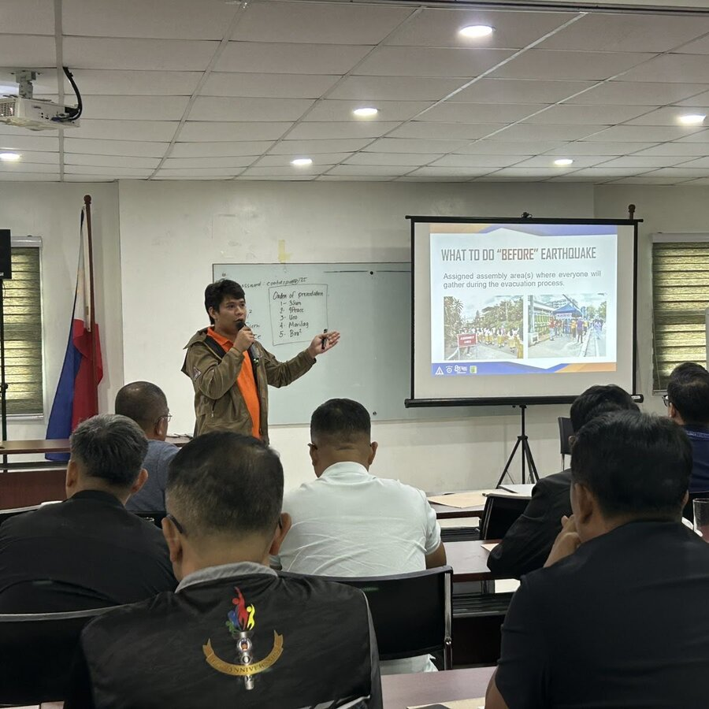
2 Hours
Disaster Preparedness Orientation
Equips you with essential skills to respond to emergencies, covering evacuation, safety protocols, and disaster response strategies.
Trainings offered
Our core programs, delivered directly by the section.

2 Hours
Equips you with essential skills to respond to emergencies, covering evacuation, safety protocols, and disaster response strategies.
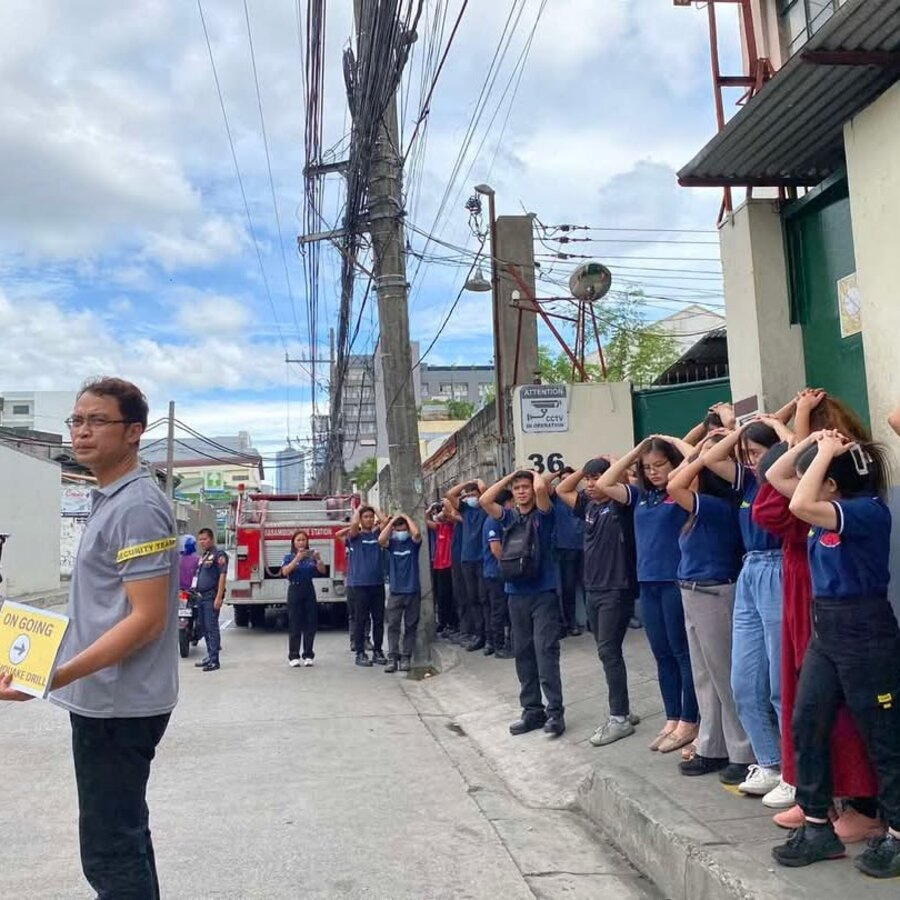
1 Hour
Evaluator services for earthquake drills, where we assess and provide feedback on response effectiveness, helping improve safety protocols and preparedness.
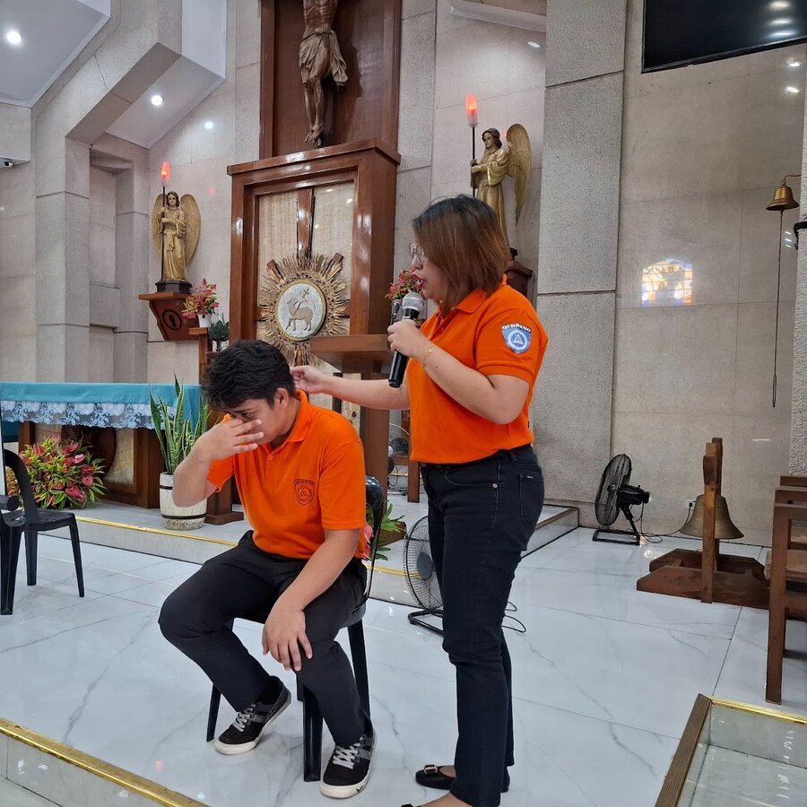
1 Hour
Teaches basic first aid skills, including emergency response, to help you handle medical situations confidently and effectively.
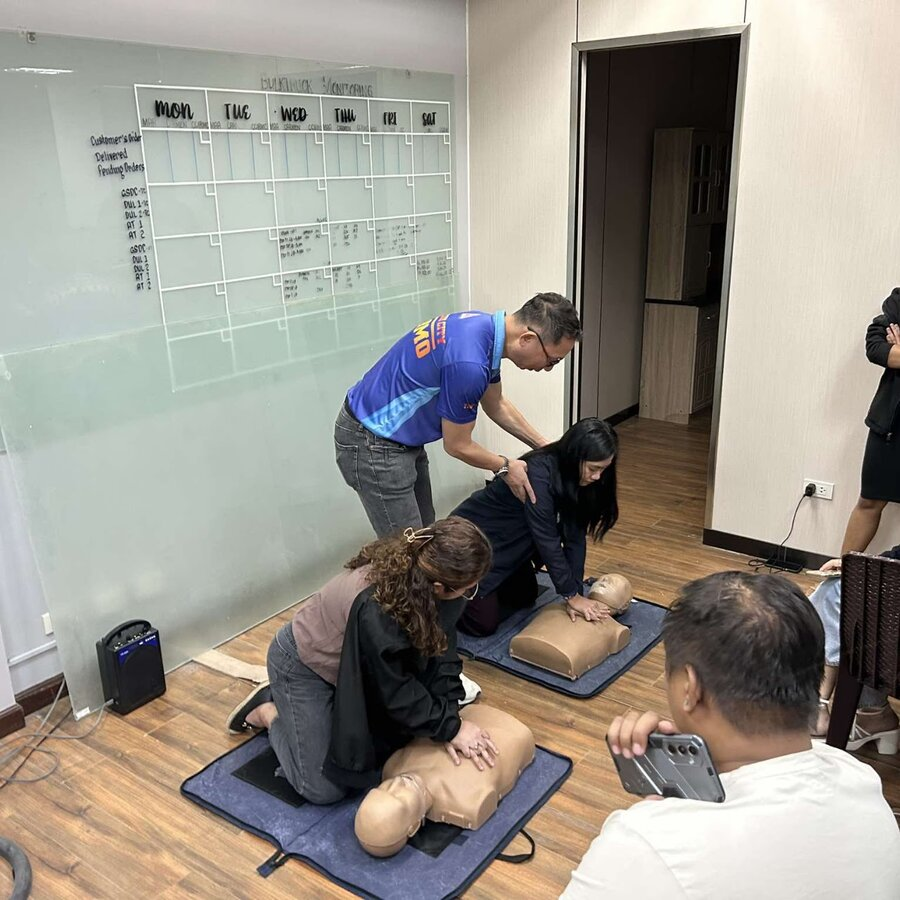
1 Hour and 30 Mins.
Teaches lifesaving skills, including CPR and proper use of an Automated External Defibrillator (AED), to respond to cardiac emergencies.
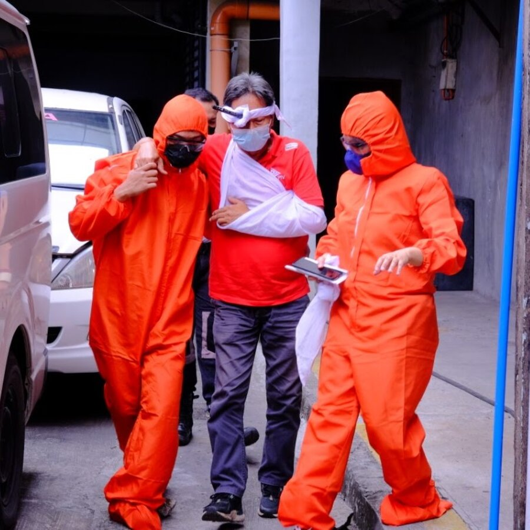
4 Days
Equips individuals with the skills to assess and respond to emergencies, providing critical care until professional help arrives.
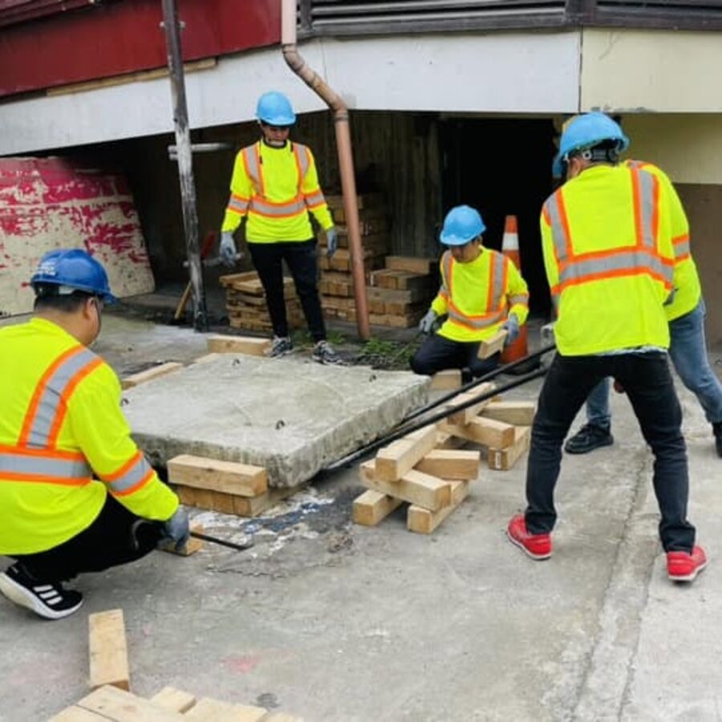
3 Days
Equips participants with essential knowledge and practical skills on how to stay safe before, during, and after an earthquake, covering preparedness, evacuation, first aid basics, and response techniques.
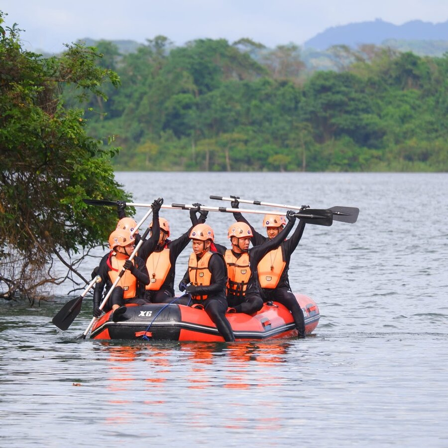
3 Days
Teaches techniques for safely navigating and rescuing in fast-moving water, including boat handling and swift water safety protocols.
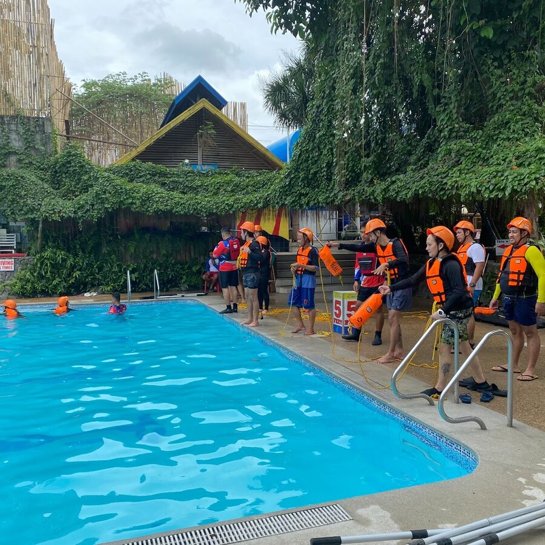
3 Days
A hands-on course that trains participants in essential water rescue techniques and safe boat handling for effective response during water-related emergencies.
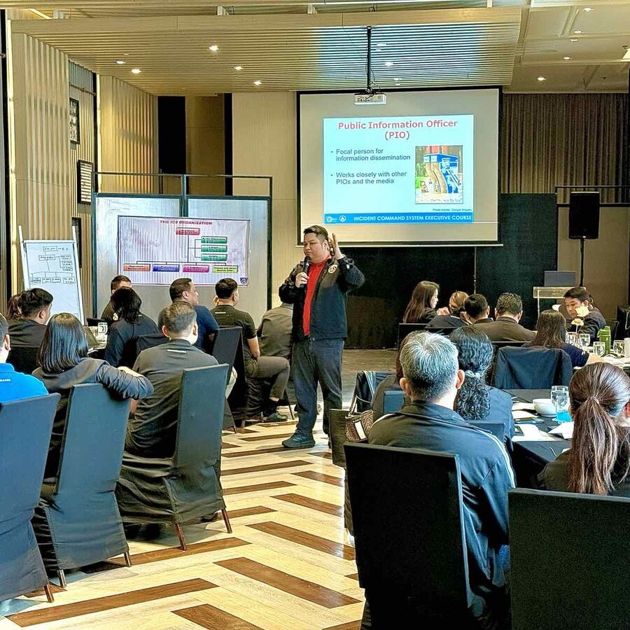
1 Hour
Covers the basics of managing emergency situations, including roles, responsibilities, and effective coordination during incidents.
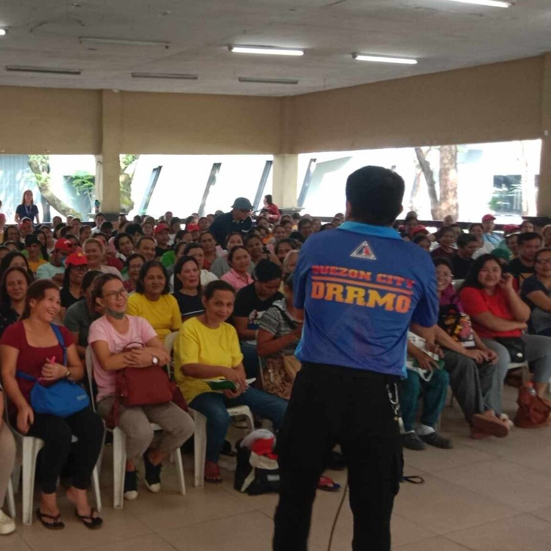
1 Hour
An orientation course that empowers communities to identify risks, reduce vulnerabilities, and strengthen disaster preparedness through participatory, locally-driven strategies.
OUR PARTNERS
Additional courses available through our partner agencies.
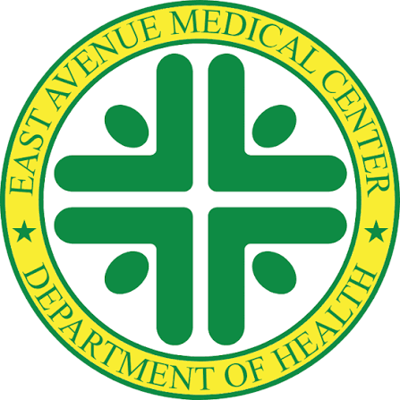
EAMC